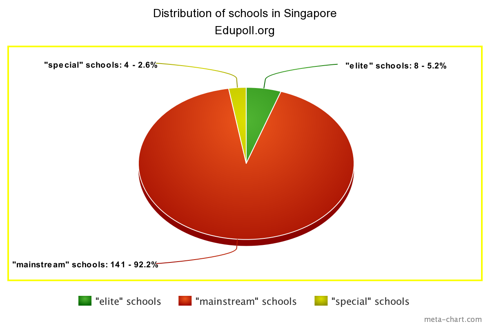

About
Where does it come from?Why is it a problem?
Origins

This problem largely arises from Singapore’s competitive culture and elitist values. This led to Singapore largely following a meritocratic system, where all individuals supposedly have an equal chance to succeed based on their methods. This system can be seen in how our school system works. By observing the results of students at examinations, they are then grouped by ability and sorted into different streams or classes. However, this system’s shortcomings can be easily seen. The frequent and demanding streaming of students based on their academic abilities inevitably groups the students with a stronger academic prowess together, which segregates students into different ability groups. These elite students eventually make it into elite schools which have better resources that “mainstream schools”. Thus this results in a vicious cycle for students of lower ability as they are not provided with the same opportunities. Although many measures are being taken to ensure equal opportunity for all students, students from higher socioeconomic backgrounds are still able to take steps to do better than others. One example of this is tuition. Students with better socioeconomic backgrounds have access to better quality of assistance such as tuition, which enables them to succeed better academically. As one’s education level has a great influence on one’s success later in life, this allows students with better socioeconomic status to excel more than their peers.
This demonstrates how although meritocracy is an ideal system, in application it is nearly impossible to guarantee that the social system is genuinely meritocratic. Those with lower socioeconomic status could find it difficult to gain access to the assistance they need to succeed academically and thus later in life, while those with higher socioeconomic status can easily access help academically and gain a boost to succeed. Generally, this means that Singapore is experiencing a situation of ‘the rich get richer, the poor get poorer’, and thus shows how the wide income gap was created and how it is widening.
The problem that we are examining is the widening income gap and income inequality in Singapore. This problem is where there is an increasingly large difference between the highest and lowest incomes in Singapore. This problem is important as it shows how inequality between those of different socio-economic status still exists and is in fact increasing. This could potentially lead to Singapore having a classed society instead of how it strives to provide equal opportunities to all through a supposedly meritocratic system. By having a large difference between those of high socioeconomic status and those of low socioeconomic status, slowly those with higher socioeconomic status will gain much more power and influence over those with lower socioeconomic status, eventually leading to a society dominated purely by those with higher socioeconomic status, with no opportunity for those of lower socioeconomic status to succeed and no social mobility.
By having a society where opportunities are very concentrated to only one group of people, society will slowly progress to one that resembles the feudal societies of the past. Society would eventually become segregated into many classes, with very limited social mobility. This is significant as a society with low social mobility will stagnate and lose global relevance. Low social mobility prevents those from lower classes from contributing important ideas to the success of the country, which could lead to an innovative stagnation. Those of higher classes are also unwilling to allow those of lower classes to contribute to society, becoming complacent in themselves and thus preventing significant innovation from happening. This also prevents foreign investors from taking interest in Singapore, and due to Singapore’s lack of natural resources, would cause its economy to eventually collapse and for Singapore to become an insignificant society.
Significance


This means that income inequality and a widening income gap is a warning, as letting it widen too far without controlling it will allow Singaporean society to become more backward. Thus, it is imperative that the problem of Singapore’s widening income gap and income inequality must be solved.
Responses
What can we do about it?In order to actively counter income inequality, we have to address the root of the problem, the education system. We propose that we build a school system of “enabling meritocracy” instead of the current meritocratic system we face today, marred by elitist values and unfair segregation.
(1)

One possible strategy to counter inequality is to change the school systems. Students are frequently streamed according to their “ability”. However, one’s ability in school does not necessarily determine their worth or value in society. When the students are streamed to “mainstream schools”, the amount of resources and funding they receive would not match that of “elite schools”. Thus students are disadvantages and segregated into different ability groups from young. Furthermore, because of lesser resources, students are trapped in a vicious cycle that they are unable to get out of. Thus, all schools should be funded equally to guarantee equal opportunities for all students. This will allow all students to enjoy the same resources needed to further their education. Moreover, students could be rewarded for doing well in different areas, which will encourage them to explore their passions in those areas. Instead of just giving the student recognition for their successes, schools should also invest more in opportunities to improve such students. Schools could also help provide opportunities for students who may not necessarily excel in an area but still display passion for it, in order to nurture future potential. Thus, all students should be funded equally in order to help them fully develop their potential.
Another solution would be to reform the streaming system. We should identify potential in students not only through their academic results, but in other areas such as talent in arts, sports, and other passions. This would ensure that every student lives up to his true potential and would not be limited in opportunities solely because of their weakness in academics. As academics are only a small area in which to excel in, we think that examinations should focus more on other talents. For example, while the current grading system in Raffles Institution uses 5 core academic subjects and one other subject, this balance could be shifted more in favour to the ‘other’ subject. In fact, students should be allowed to use their areas of success, even in things such as sports, to count towards their grade. This ensures that areas of passion can actually be utilised to help one in one’s education. Outside of curriculum activities that are approved by the school can also be counted in one’s grade, in order to encourage passion in other subjects. For example, a piano student could use his excellence in piano to count as an additional subject. Therefore, grading should not only focus on academic grades. While schools like Raffles Institution have special elective programs, we think that even more areas can be utilised as examinable subjects, and that the examination system can be completely revamped.
(2)

All in all, we aim to provide equal opportunities for all students to succeed, regardless of family background. Through the methods stated above, we believe the income gap will narrow as time passes. Albeit this method may not seem as effective initially, it is a long term solution that will slowly come to fruition due to the elimination of unfair segregation that causes inequality, and thus help the problem of income inequality in Singapore.
References
Feng, M. (2019, February 17). The Average Singaporean Household Income: Where Do You Stand? Retrieved from https://blog.seedly.sg/average-singaporean-household-income-stand/
M. O. E. (2013, September 3). List of Secondary Schools by Planning Area. Retrieved from https://web.archive.org/web/20130903001727/http://www.moe.gov.sg/education/admissions/secondary-one-posting/files/schools-by-area.pdf
M. O. E. (2019, July 8). Beta Ministry of Education. Retrieved from https://beta.moe.gov.sg/secondary/dsa/
Phneah, J. (2018, June 13). 5 Differences between Neighbourhood and Elite Schools in Singapore. Retrieved from http://www.jeraldinephneah.com/neighbourhood-and-elite-schools-in-singapore/
Teng, A. (2016, February 22). Fairly diverse group gains direct school admission, about 60% live in HDB flats: MOE. Retrieved from https://www.straitstimes.com/singapore/education/moe-fairly-diverse-group-gains-direct-school-admission